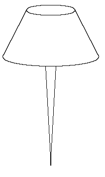
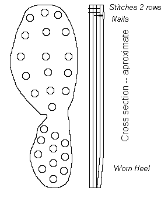

What are Hobnails?

Did they Use Hobnails in the Middle Ages?
Maybe/Maybe not.
Archaeological evidence:
There is no archaeological information that says they used them after the fall of Rome, and before the early 1500s (and dates that early are arguable). There are plenty of examples of soles left by the Romans that show evidence of hobnails, but none from the middle era. There is one example of a patten from London [TL 74 [368]<1258>, Group G15, c.1440] that has an extra layer of leather nailed to an earlier patten that was stitched together. This is clearly a repair though, as the wear on the heel appears beneath the repair. Also, hobnails both in the Roman era, as well as after the 16th century, were not used for construction. Clinch nails were. Unfortunately, since I have not actually examined this patten, it is not clear to me if the nails used here are flat headed or rounded, and how deeply pressed into the leather the head is. However, it is unlikely that these are hobnails.

(illustration after Mitford).Artistic evidence:
None of the artwork from the medieval period that I know of depicts hobnails, of course this does not mean that they weren't used.
Literary Evidence:
There are two literary references that could be interpreted as referring to hobnails (or to other things completely):
- Alexandri Neckam De naturis rerum. There is a description of what someone who is to travel by horse will need, and describes "shoes that are well fastened with with iron nails". It is likely, however, this refers to the horse's shoes.
- "Piers the Plowman's Crede", line 424. "With his knopped schon clouted full thykke" The point being the definition of "knopped", which an examination of the MED tells us is "knobbed", or knobby, gnarled, bumpy, lumpy, thickened, calloused, or bark-like. Although this is sometimes translated as "With his lumpy shoes stuffed with rags" (See Piers the Plowman's Crede, Edited by James Dean. Originally Published in Six Ecclesiastical Satires. Kalamazoo, Michigan: Western Michigan University for TEAMS, 1991 http://www.lib.rochester.edu/camelot/teams/crede.htm#f39) This could refer to the patches on the shoes (the usual definition of 'clouted'), or hobnails, or something else entirely.
Footwear of the Middle Ages - Hobnails, Copyright � 2001 I. Marc
Carlson.
This page is given for the free exchange of information, provided the author's name is
included in all future revisions, and no money change hands, other than as expressed in
the Copyright Page.